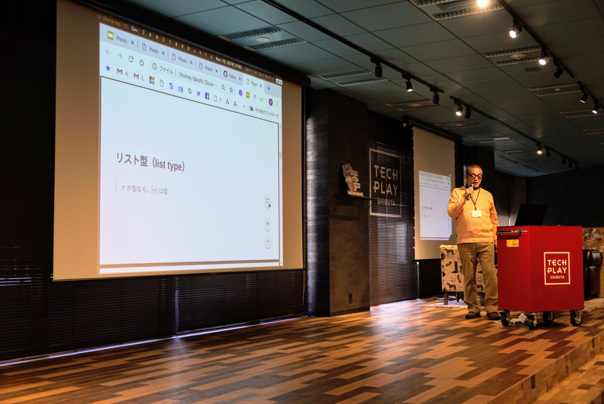
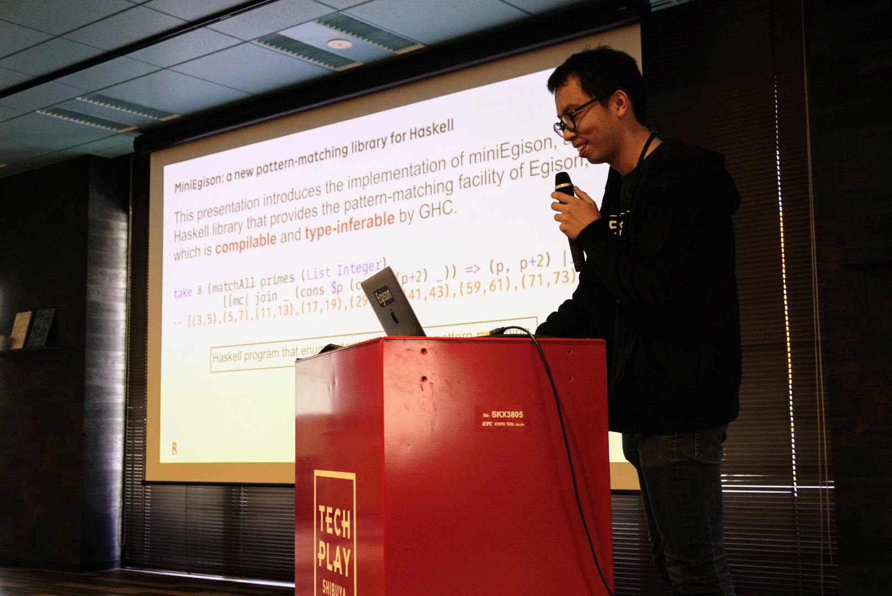
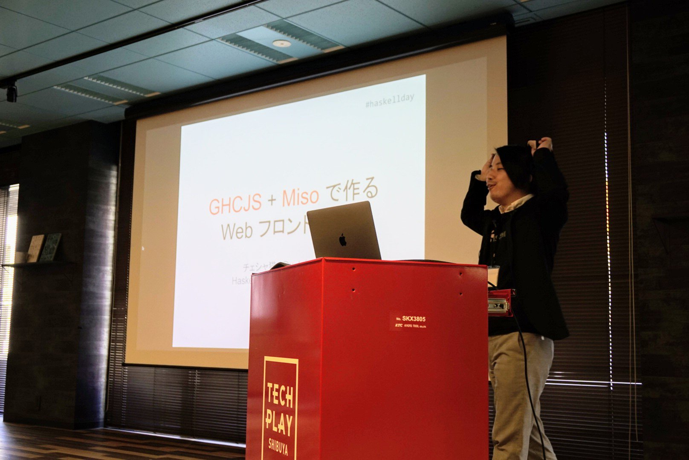
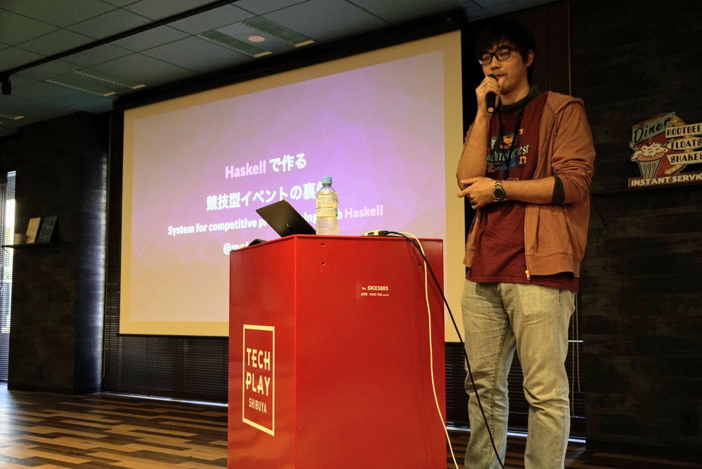
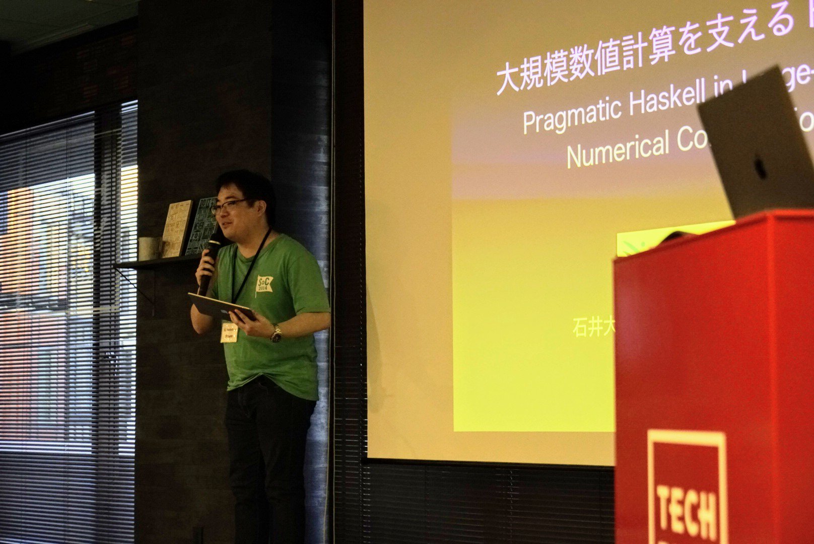
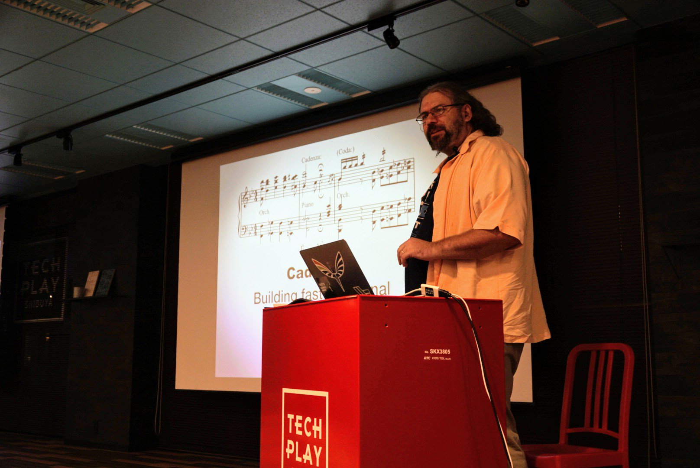
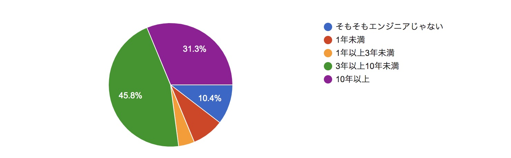
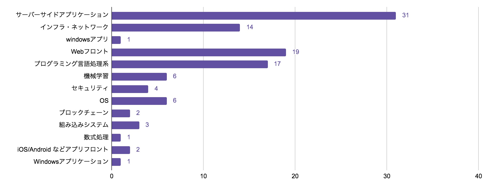

先日2019年11月9日、TECH PLAY SHIBUYAにてHaskell Day 2019を開催しました。
今回は、各発表の概要や、アンケートの結果をお伝えしたいと思います。
- 発表
- 関数型(function type)を見つめるプログラミング
- HKD(Higher Kinded Datatype)
- 「しんさんきぼう」のDerivingストラテジー
- HaskellメタプログラミングによるEgisonのパターンマッチの実装
- 関数と型で理解する自動微分
- GHCJS によるWebフロントエンド開発
- Haskellで作る競技型イベントの裏側
- 大規模数値計算を支える Haskell ── Pragmatic Haskell in Large-Scale Numerical Computation──
- Cadenza: Building fast functional languages on the JVM
- LT
- アンケート結果
- おわりに
- あわせて読みたい
Link to
here発表
まずは各種発表の紹介から。
Link to
here関数型(function type)を見つめるプログラミング
「関数型」 — すなわちHaskellでいうところのa -> bで表される、Haskellの関数について、ちょっと見方を変えた新しい発見を教えてくれました。

Link to
hereHKD(Higher Kinded Datatype)
Higher Kinded Datatype (HKD)という、昨今Haskell界で流行りの型定義方法を解説しています。
レコード型を定義する際HKDにすることで、より柔軟に扱うことができるようになります。
さらに、barbiesやextensibleといった、HKDの利用を飛躍的に促進するパッケージも紹介されました。

Link to
here「しんさんきぼう」のDerivingストラテジー
Haskellのderiving機能 — 型を定義したとき、型クラスのインスタンスまで自動で定義してくれるあの機能ですね — の、適用範囲を広げるGHCの言語拡張をいろいろ紹介してくれました。

Link to
hereHaskellメタプログラミングによるEgisonのパターンマッチの実装
プログラミング言語Egisonの核となる機能である強力なパターンマッチを、GHCの各種拡張を駆使することで、Haskellのソースコードに自然に埋め込めるような形で実装した、という話です。

Link to
here関数と型で理解する自動微分
関数の自動微分を行うパッケージadの仕組みを自力で実装してみることで解説してくれました。

Link to
hereGHCJS によるWebフロントエンド開発
misoというおいしそうな名前のアプリケーションフレームワークと、Firebaseと連携するmisoのサンプルを、ライブコーディングを通して紹介してくれました。
misoを使えば、GHCJSを使ってElm Architecture風の設計に基づいてアプリケーションを作ったり、さらにそのコードを利用してサーバーサイドレンダリングをしたりできます。
ℹ️資料はまだ公開されていません！当日はライブコーディングが大半の時間を占めていたため、同等の解説を文章にして公開したいというチェシャ猫さんの意向によるものです。
現在執筆中のためお待ちください。🙇

Link to
hereHaskellで作る競技型イベントの裏側
「mixi git challenge」というイベントにおいてユーザーが投稿した解答を採点するサーバーを、HaskellとElmで一から書き直した、という事例を発表してくれました。
rioやservantといった著名なパッケージを使うだけでなく、足りないところを自力で補って新しいパッケージとして公開したり、さらに作成したアプリケーション自体をOSSとして公開したりすることで、大きな資産を残していただけました。

Link to
here大規模数値計算を支える Haskell ── Pragmatic Haskell in Large-Scale Numerical Computation──
DeepFlow株式会社におけるHaskellの事例の紹介です。
超高速で大規模な数値計算システムを、GHCの多様な言語拡張を駆使して作っているそうです。
Tagless Finalを活用することで知っているべき領域を区分して仕事を分けることに成功しているという点が印象的でした。

Link to
hereCadenza: Building fast functional languages on the JVM
cadenzaという、Truffle（GraalVMに含まれている、高速なインタープリター作成フレームワーク）製の関数型言語の紹介です。
Truffleがもたらす強力なJITと「Normalization by Evaluation」という技術を応用することで、型検査と実行時両方における高いスピードを得ることが狙いだそうです。 将来的には依存型言語における型チェックや、GHCのランタイムの高速化に寄与したいとのことです。

Link to
hereLT
今回はHakell Day史上初めての試みとして、Lightning Talkを当日公募しました。
残念ながら5分間という短い制限時間に収められない発表が大半でしたので、ぜひ👇の資料を読んでみてください！
順番が間違っていたら済みません！ご指摘を！
- 3D Model in Haskell - Haskellで3Dモデルに触れる
- HaskellでIoTやってます
- QuoraでHaskellへの愛を語る
- Haskellで作ってわかる型クラス
- Abstract Typeclasses - How To Design a Future-Proof Typeclass
- GHCのGC
Link to
hereアンケート結果
Haskell Day の各セッションや、参加者のバックグランドなどについてアンケートをとりました。 なので、後者の方の集計結果を載せたいと思います（前者はセッション発表者へのフィードバック）。
Link to
hereHaskell 以外のプログラミングに関する質問
大きく分けて Haskell に関する質問とそうでない質問がありました。 まずは Haskell 以外に関する質問の方を集計結果を紹介します。
Link to
hereエンジニアの経験年数はどれくらいですか？

Link to
here得意なプログラミング言語はなんですか？
ちなみに、言語のリストは Haskell Survey 2019 を参考にしました。

Link to
here得意・好きな技術領域はどれですか？

Link to
here最近注目している技術があれば記述してください
自由記述形式にしたところ、ほとんど重複が無かったので箇条書きにします。
- FP
- 匿名暗号通貨(Monero,Zcash,Dash,Koto)
- Cardano ADA
- GraphQL
- extensible
- Enigma
- workerベースの非同期プログラミング
- フロント界隈
- Next.js
- 自然言語処理
- 型レベルプログラミング
- 自動微分
- AWSによるサーバーレスアーキテクチャでのフルスタックWebアプリケーション開発
- Rust
- Kubernetes
- TLA+
- algebraic effects and handlers
- 深層学習コンパイラ
- AR
- 定理証明支援系
Link to
hereHaskell に関する質問
ちなみに、Haskell に関する質問は Haskell Day 2018 でもアンケートしました。
Link to
hereHaskell をいつ頃始めましたか？

Link to
hereHaskell を初めてどれくらい経ちますか？

Link to
here読んだことのある日本語の Haskell 本は？
参照: https://wiki.haskell.jp/Links#書籍

Link to
hereおわりに
以上の発表に加えて今回は、下記のスポンサー企業の皆様や@fumievalくんのおかげで、大変満足度の高い懇親会ができました。

発表について。
昨年は「Haskellちょっと興味あるからちょっとできるまで」というテーマを意識して、発表の難易度別に時間帯が分かれるよう調整しましたが、残念ながらうまくいきませんでした。
そこで難易度調整の難しさを痛感したため、今回は敢えて難易度調整を行わなかったのです。
結果、全体として難しい発表に偏ってしまった点は少し反省です。私が会社で開いているHaskell勉強会に毎回参加いただいている同僚も、総じて難しくて追いつくのが大変だった、と仰ってました。
次回は特別に難易度を下げた発表枠をいくつか作り、内容を事前に精査する、なんてプランを考えています。
会場について。
TECHPLAY SHIBUYAは素晴らしいですね！
我々のようなお金がないコミュニティーが今回の規模のイベントを行うのにうってつけでした。
元々イベントを開催する前提で作られており、受付と演壇が近いため受付しながら発表を聞くことができるのも、持ち回りで受付をしている我々にとって好都合でした。
来年も是非使わせていただきたいです🙏
最後に。
発表者のみなさんはもちろん、支えていただいたスタッフ、スポンサー企業、会場まで足を運んでいただいた参加者の皆様、その他この会の実現に関わったすべての方々に、この場を借りて感謝の意を示したいと思います。
みなさんのご協力おかげで、大きなトラブルもなく、楽しいイベントが開催できました。ありがとうございます。
今後も日本Haskellユーザーグループ（a.k.a. Haskell-jp）をよろしくお願いします！
hask(_ _)eller